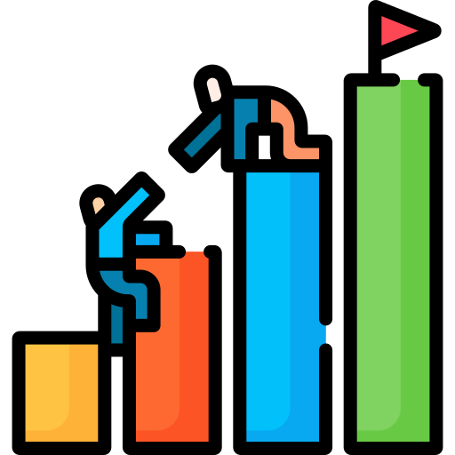

A JobFlow surgiu para atender a crescente demanda de apoio aos trabalhadores informais, pessoas que atuam por conta própria ou realizam "bicos" em diversas áreas. Desde sua fundação, a empresa tem como principal objetivo oferecer soluções práticas, eficientes e acessíveis, facilitando o controle e a gestão desse tipo de mão de obra. Nosso compromisso é com a valorização desses profissionais, proporcionando ferramentas que melhorem sua organização, produtividade e qualidade de vida.

Entender melhor as necessidades de quem trabalha por conta própria ou realiza "bicos".
Ser referência no Brasil em controle e gestão de trabalhadores informais.
Compromisso, inovação, transparência e responsabilidade social.